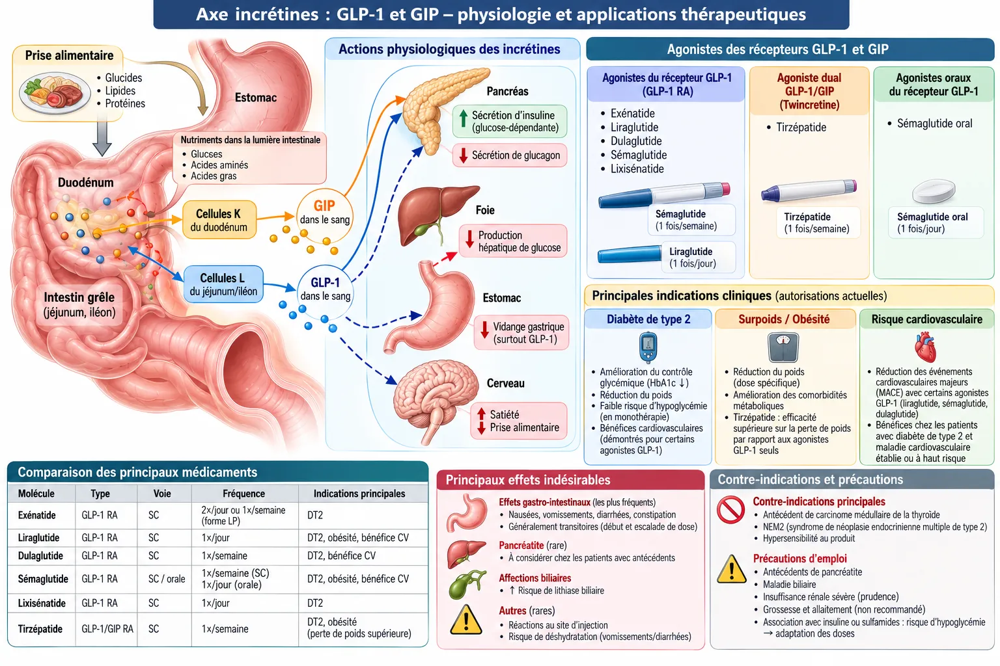
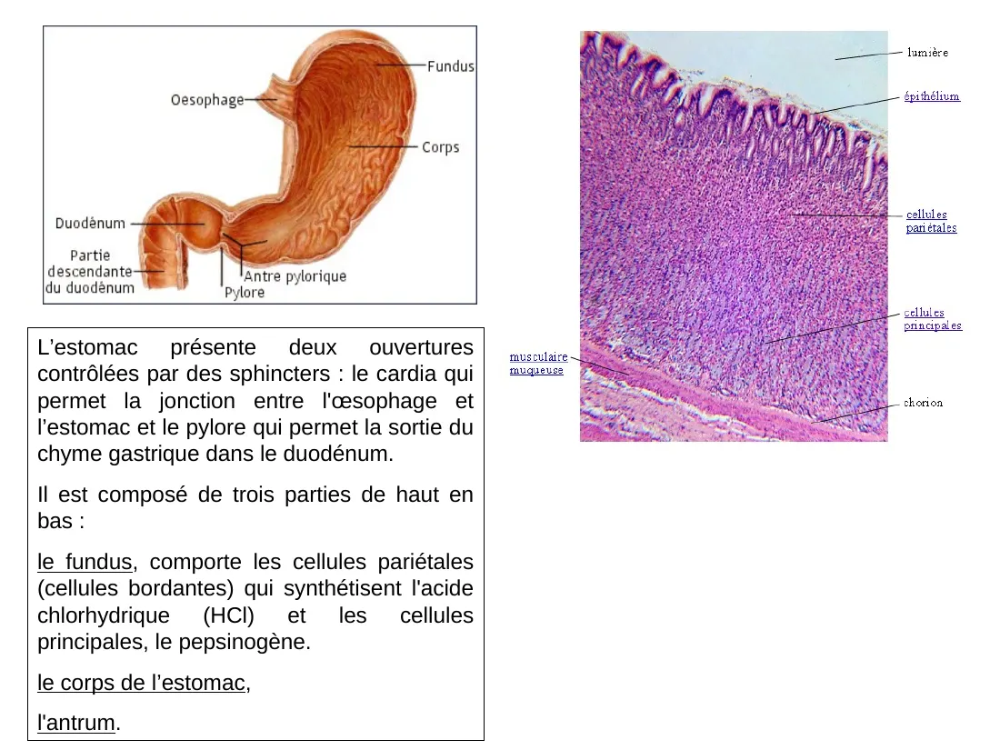
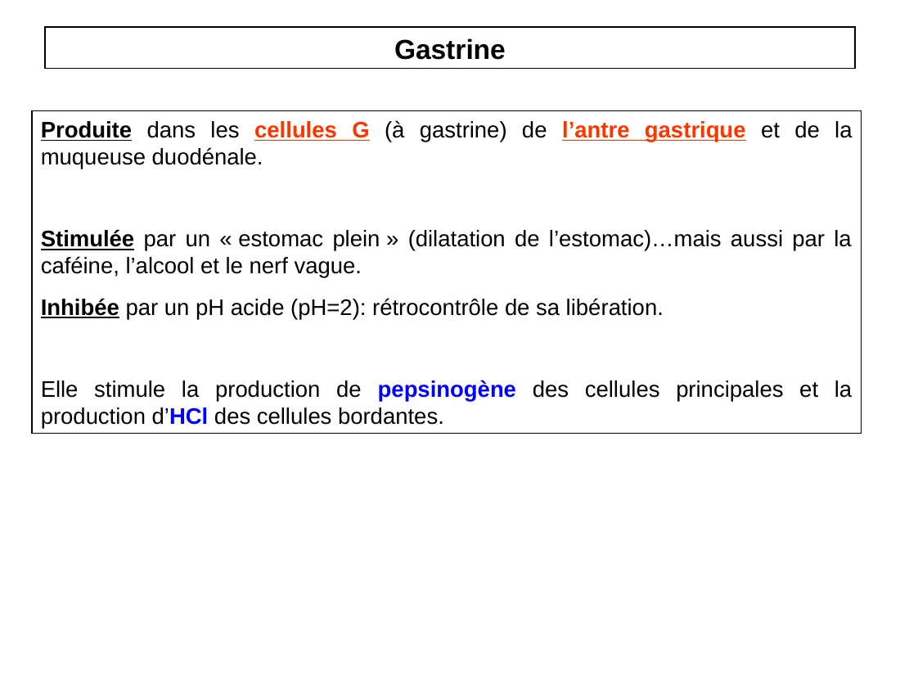
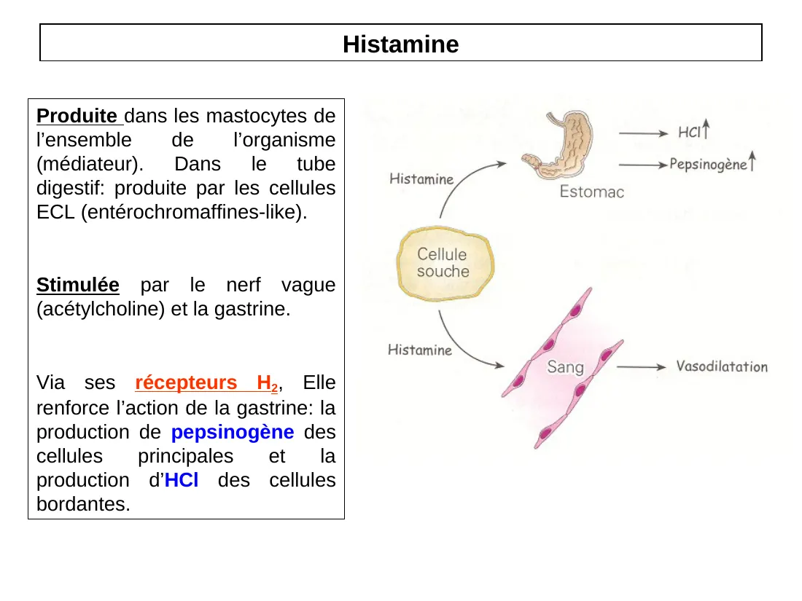
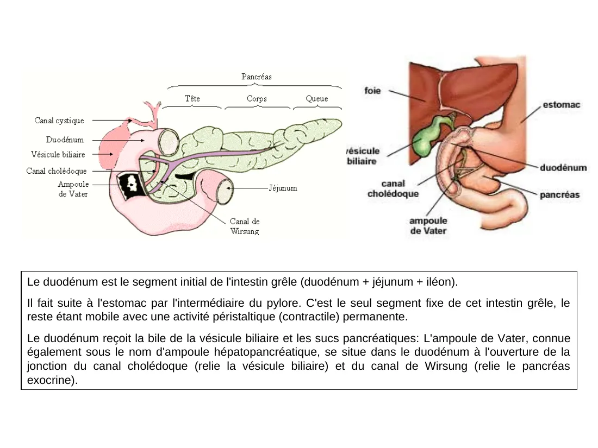
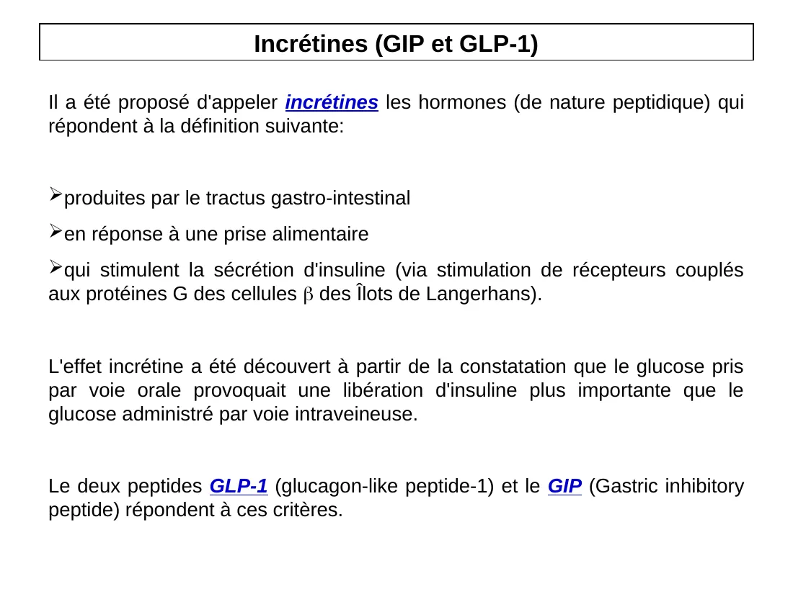
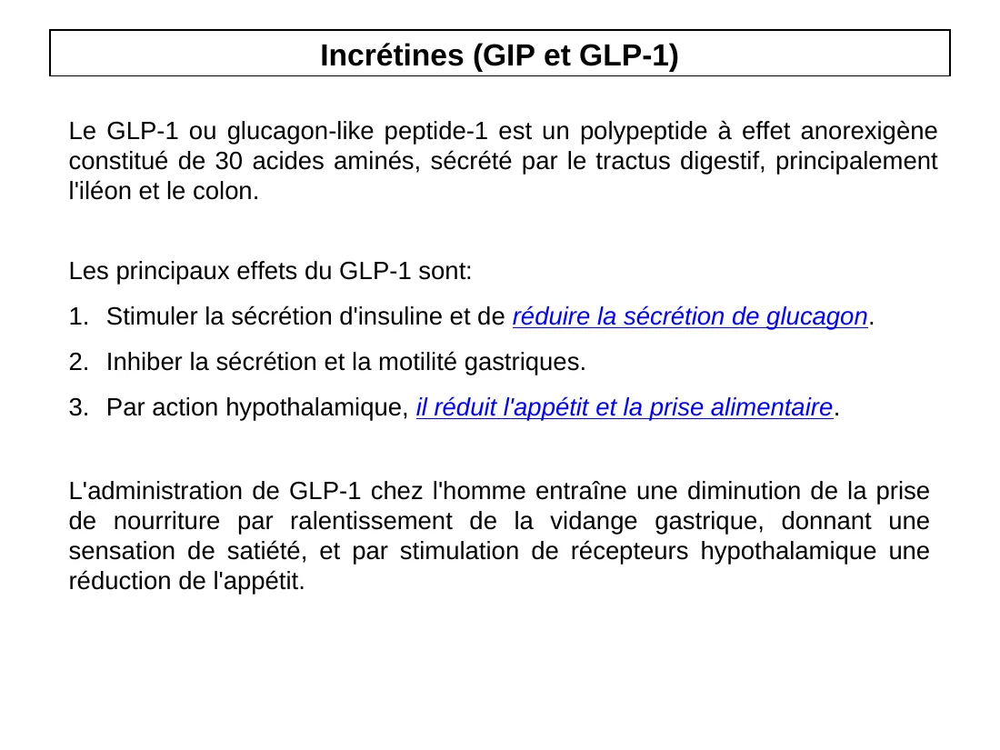
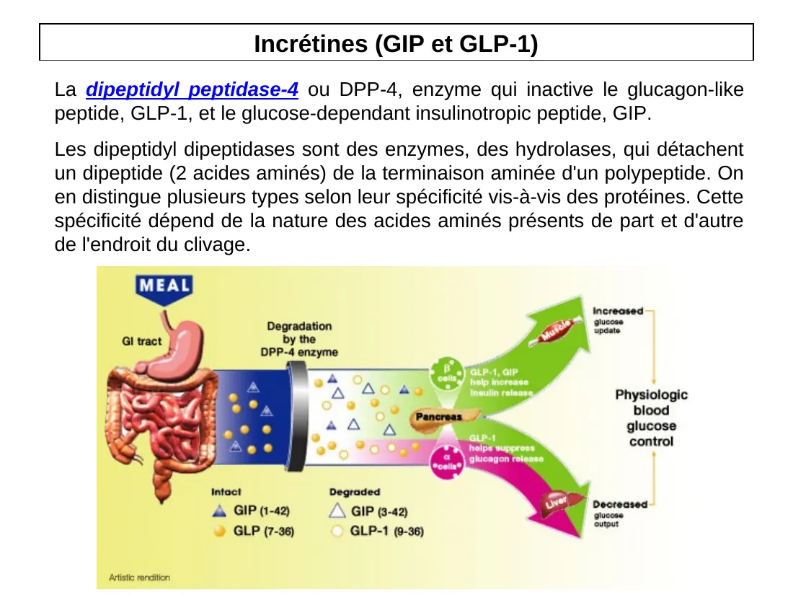
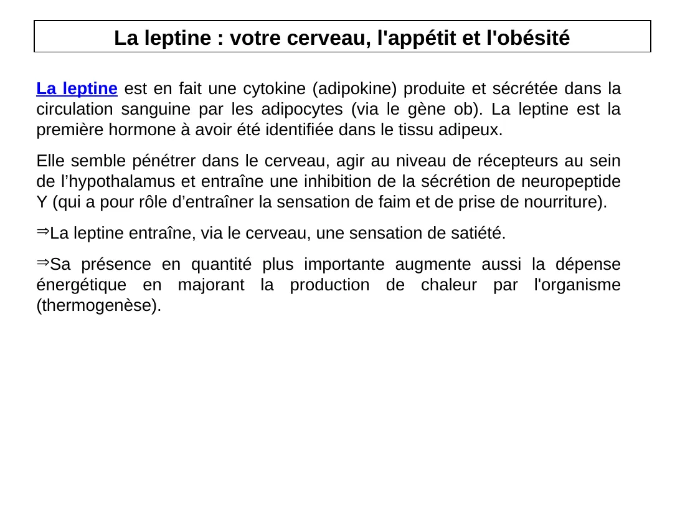

Les hormones gastro-intestinales
Un petit chapitre « de noms » : « il n'y a pas vraiment à retenir par cœur, à part les noms, c'est assez logique ». Le prof se concentre sur ce qui peut tomber : la régulation de la sécrétion gastrique (gastrine, histamine, somatostatine), sécrétine et CCK, et surtout les incrétines (GLP-1, GIP), « que vous entendez depuis des mois » (OZEMPIC®, MOUNJARO®), plus la leptine.
1. Vue d'ensemble : le schéma de synthèse du profWebCampus 2026-2027 · 1 concept


Concepts à comprendre (1)
Régulation nerveuse et hormonale
La régulation nerveuse est la plus rapide : le parasympathique (nerf vague, acétylcholine) stimule toutes les fonctions digestives (HCl, enzymes, motilité). La régulation hormonale ajuste ensuite selon le contenu de l'estomac et du duodénum. Toutes ces hormones sont peptidiques (sauf l'histamine, dérivée d'un acide aminé) : récepteurs membranaires.
2. Régulation de la sécrétion gastriquedias 4-11 · 1 concept



| Hormone | Cellules | Stimulée par | Effet |
|---|---|---|---|
| Gastrine (la plus importante) | Cellules G de l'antre et du duodénum | Estomac plein (dilatation), caféine, alcool, nerf vague ; inhibée par pH ≈ 2 (rétrocontrôle) | Pepsinogène (cellules principales), HCl (cellules pariétales), motilité |
| Histamine | Cellules ECL (et mastocytes ailleurs) | Nerf vague (ACh), gastrine | Via H2 : renforce la gastrine (HCl, pepsinogène) |
| Somatostatine (inhibiteur général) | Cellules D | Estomac plein qui passe dans le duodénum, pH bas | Inhibe toutes les hormones GI (gastrine, histamine, CCK) via Gi → AMPc ↓ |
| VIP | Neurones entériques | — | Comme la sécrétine : inhibe le suc gastrique et l'HCl |
Concepts à comprendre (1)
Une même histamine, deux récepteurs
H1 : réactions allergiques (vasodilatation, bronchospasme) → antihistaminiques H1 (allergie). H2 : estomac → sécrétion acide → anti-H2 (ranitidine, famotidine) contre l'hyperacidité. « On est vraiment sur une question de récepteur, mais c'est la même histamine. »
Pourquoi un anti-H2 diminue-t-il l'acidité gastrique ?
L'histamine des cellules ECL renforce l'effet de la gastrine sur les cellules pariétales via les récepteurs H2. Les bloquer réduit la production d'HCl.
3. Sécrétions pancréatiques et biliaires : sécrétine et CCKdias 13-16 · 2 concepts

Concepts à comprendre (2)
Sécrétine
Cellules S du duodénum et du jéjunum, stimulées par le chyme acide. Elle fait sécréter par les canaux pancréatiques un suc riche en bicarbonate → neutralise l'acidité qui arrive de l'estomac (le duodénum est moins protégé par le mucus). Elle stimule aussi la sécrétion biliaire et inhibe la fonction gastrique.
Cholécystokinine (CCK)
Cellules I du duodénum et du jéjunum, stimulées par les lipides et les AA. Double effet : ↑ des enzymes pancréatiques et contraction de la vésicule biliaire (libération de la bile). Elle ralentit la vidange gastrique. Point du prof : la vésicule biliaire ne sécrète rien, elle stocke et concentre la bile fabriquée par le foie.
4. Les incrétines : GIP et GLP-1dias 17-21 · « retenez-le » · 1 concept
Incrétine = hormone peptidique produite par le tube digestif en réponse à un repas, qui stimule la sécrétion d'insuline (RCPG des cellules β). C'est pourquoi le glucose pris par la bouche fait sécréter plus d'insuline que le même glucose en intraveineuse. Leur effet n'existe que si la glycémie est normale ou haute : elles potentialisent l'effet du glucose → pas d'hypoglycémie.



| GIP | GLP-1 | |
|---|---|---|
| Nom | Gastric inhibitory peptide = glucose-dependent insulinotropic peptide | Glucagon-like peptide-1 |
| Origine | Cellules K, duodénum et jéjunum ; 42 AA | Cellules L, iléon et côlon ; 30 AA |
| Effets | Insuline ↑ ; ralentit la vidange gastrique | Insuline ↑, glucagon ↓, vidange gastrique ↓, satiété (SNC, anorexigène) |
| Dégradation | Par la DPP-4 (dipeptidyl peptidase-4), qui coupe un dipeptide N-terminal | |
Concepts à comprendre (1)
Deux stratégies médicamenteuses
1) Analogues du GLP-1 résistants à la DPP-4 (injectables) : exénatide (le premier), puis liraglutide, sémaglutide (OZEMPIC®) ; le tirzépatide (MOUNJARO®, agoniste GLP-1 + GIP) est encore plus efficace. Diabète de type 2, surtout avec obésité (perte de poids). 2) Inhibiteurs de la DPP-4 = gliptines (oral) : ils augmentent le GLP-1 endogène, mais sont moins efficaces.
Pourquoi les incrétino-mimétiques donnent-ils rarement des hypoglycémies, contrairement aux sulfonylurées ?
Leur effet insulinotrope n'apparaît qu'à glycémie normale ou élevée : ils potentialisent l'effet du glucose. Les sulfonylurées ferment le canal K⁺-ATP même sans glucose.
5. La leptinedias 23-24 · 1 concept

Concepts à comprendre (1)
L'hormone du tissu adipeux
Une adipokine (cytokine des adipocytes, gène ob), première hormone identifiée dans le tissu adipeux. Elle informe l'hypothalamus de la quantité de TG stockés : elle freine le neuropeptide Y (qui donne faim) → satiété et dépense énergétique ↑ (thermogenèse). Des mutations du gène de la leptine ou de son récepteur donnent des obésités génétiques (résistance à la leptine). Les mimétiques de la leptine ont peu d'intérêt : contrairement au GLP-1, pas d'effet endocrine sur l'insuline.
Ce que le prof a dit en cours
Relevé dans tes enregistrements (cours 2.4 de 2025, JMD).
- « Je vais me concentrer sur là où vous avez des questions d'examen potentielles. »
- « Il n'y a pas vraiment à retenir par cœur, à part les noms, c'est assez logique » : gastrine, histamine, somatostatine.
- La même histamine agit via H1 (allergie, antihistaminiques) et via H2 (estomac, sécrétion acide).
- La somatostatine est « vraiment l'inhibiteur » de la production des hormones intestinales et gastriques.
- Retenez bien : la vésicule biliaire n'est pas un organe sécréteur.
- « Un groupe que je vous demande de bien retenir » : la régulation par le pancréas endocrine via les incrétines, le GLP-1 et le GIP (« retenez-le »).
- OZEMPIC® = GLP-1 stabilisé (sémaglutide) ; MOUNJARO® marche encore mieux ; traitement de base du diabète de type 2 avec obésité (revu au séminaire diabète).
- Deux façons d'augmenter le GLP-1 : l'injecter (analogue) ou inhiber l'enzyme qui le dégrade (DPP-4, gliptines).
- Leptine : adipokine, satiété via l'hypothalamus et le neuropeptide Y ; obésités génétiques par mutation de la leptine ou de son récepteur.
Les questions posées par le prof
Ce chapitre a peu de questions directes : les questions sont reformulées à partir des points sur lesquels le prof a insisté.
- Reformulée · 2.4Sur la base d'un schéma, expliquez la régulation hormonale et nerveuse de la sécrétion gastrique. reformulée
Voir la réponse
Stimulation : nerf vague (ACh) ; estomac plein → gastrine (cellules G de l'antre) → HCl (cellules pariétales) et pepsinogène (cellules principales) ; ACh + gastrine → histamine (cellules ECL) → récepteurs H2 → renforce l'HCl. Freins : pH ≈ 2 inhibe la gastrine (rétrocontrôle) ; somatostatine (cellules D) inhibe gastrine, histamine et CCK via Gi ; VIP ; sécrétine et GIP depuis le duodénum. - Reformulée · 2.4Qu'est-ce qu'une incrétine ? Décrivez le GIP et le GLP-1 et leur intérêt thérapeutique. reformulée
Voir la réponse
Hormone peptidique digestive, libérée en réponse à un repas, qui stimule la sécrétion d'insuline (RCPG des cellules β) de manière glucose-dépendante. GIP : cellules K (duodénum, jéjunum), 42 AA, insuline ↑. GLP-1 : cellules L (iléon, côlon), 30 AA, insuline ↑, glucagon ↓, vidange gastrique ↓, satiété. Tous deux dégradés par la DPP-4. Thérapie du diabète de type 2 et de l'obésité : analogues du GLP-1 (exénatide, sémaglutide OZEMPIC®, tirzépatide MOUNJARO®) ou inhibiteurs de la DPP-4 (gliptines). - Reformulée · 2.4Quels sont les rôles de la sécrétine et de la cholécystokinine ? reformulée
Voir la réponse
Sécrétine (cellules S, chyme acide) : bicarbonate pancréatique → neutralisation, sécrétion biliaire, inhibition gastrique. CCK (cellules I, lipides et AA) : enzymes pancréatiques ↑, contraction de la vésicule biliaire, vidange gastrique ralentie. - Reformulée · 2.4Qu'est-ce que la leptine et pourquoi s'y est-on intéressé dans l'obésité ? reformulée
Voir la réponse
Adipokine sécrétée par les adipocytes proportionnellement aux réserves ; agit sur l'hypothalamus (inhibe le neuropeptide Y) → satiété, thermogenèse. Des mutations de la leptine ou de son récepteur donnent des obésités sévères génétiques. Les mimétiques de la leptine sont peu efficaces (pas d'effet endocrine, résistance).
Fiche de révision au format de l'examen
Partie 1 — Question de développement
Les incrétines : définition, GIP, GLP-1, régulation de la sécrétion d'insuline et applications pharmacologiques.
Corrigé
Partie 2 — Questions ouvertes courtes
- Quelle cellule produit la gastrine et qu'est-ce qui l'inhibe ?
Réponse
Cellules G de l'antre (et du duodénum) ; inhibée par un pH acide (≈ 2) et la somatostatine. - Quelle enzyme dégrade le GLP-1 et comment l'exploite-t-on ?
Réponse
La DPP-4 ; ses inhibiteurs (gliptines) augmentent le GLP-1 endogène. - Quel récepteur de l'histamine stimule la sécrétion acide ?
Réponse
H2. - Quelle hormone fait contracter la vésicule biliaire ?
Réponse
La cholécystokinine (CCK).